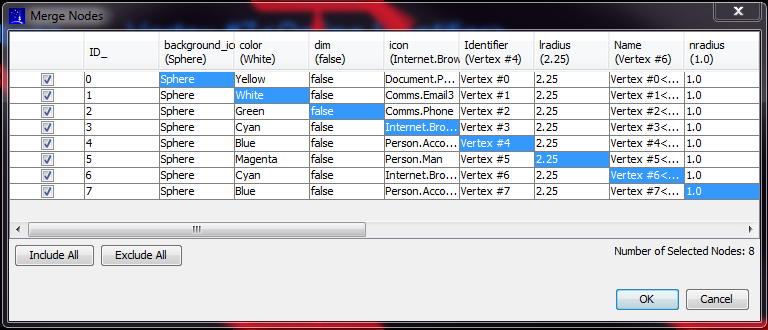

Merge all the selected nodes into a single node.
Alters the structure of the graph by deleting all but one of the nodes and reconnecting all the
transactions to the remaining node. Requires at least two selected nodes.
Clicking the command from the menu "Tools → Merge Nodes", the application presents the following panel to the user.

Click the OK button to execute the merge operation.
By default, all of the nodes are selected for merging. The selected nodes are marked in the table by the
check box in the left-most column. Any node can be excluded/included from the merge operation by either
clicking in the checkbox or using the Include All or Include All actions in the lower left-hand
corner of the panel.
The total number of selected nodes is displayed in the lower right-hand corner of the panel.
By default, the final merge node will get a copy of all the attributes of the first node listed in the table.
Clicking an individual cell in each column will identify the attribute values to be copied to the merged node.
Alternatively, clicking an ID value will select all the attributes values of the given row.